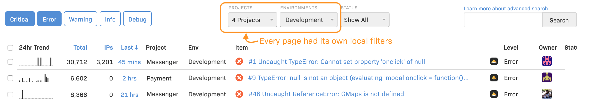
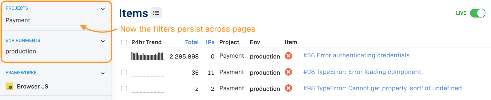
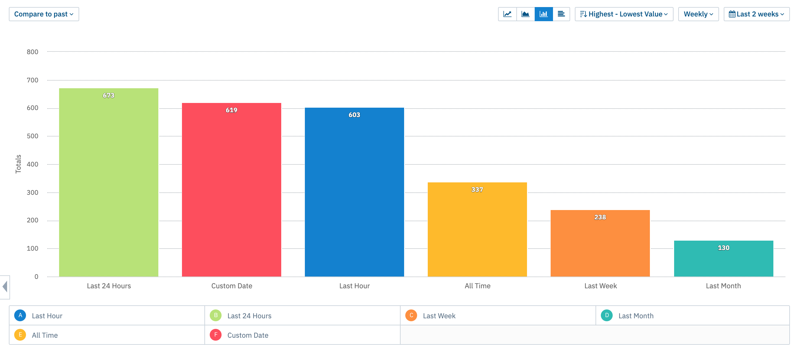
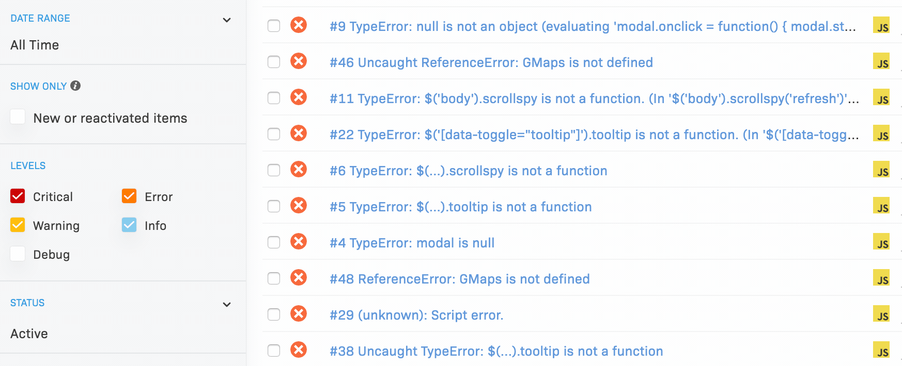
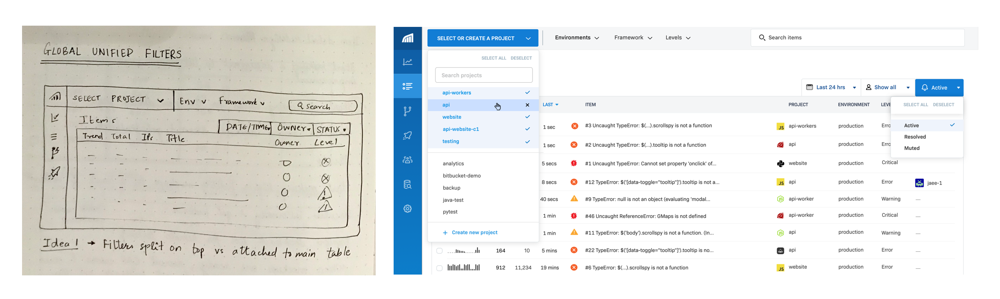
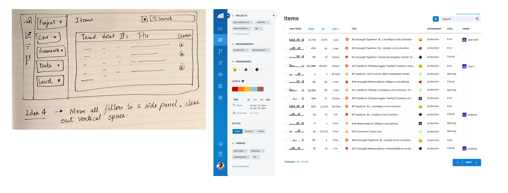
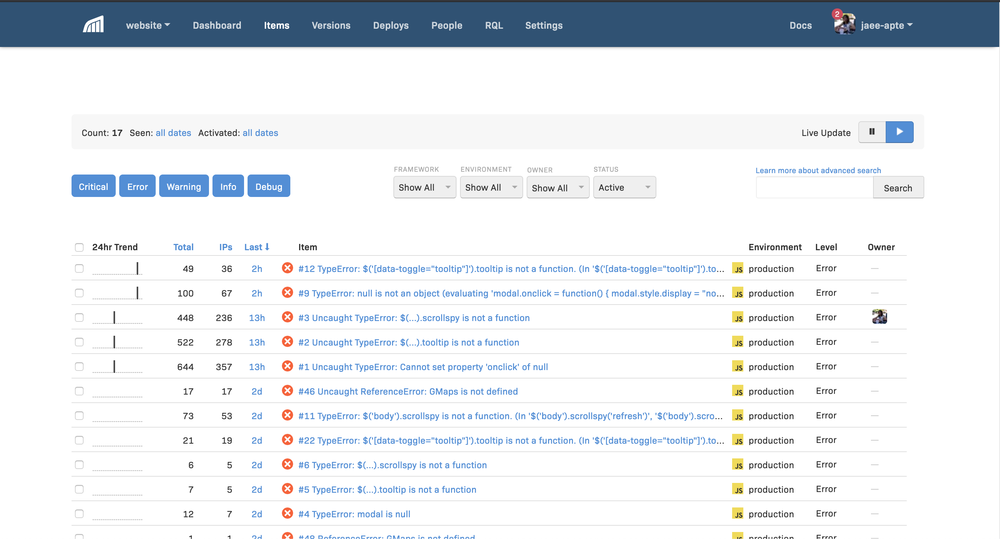
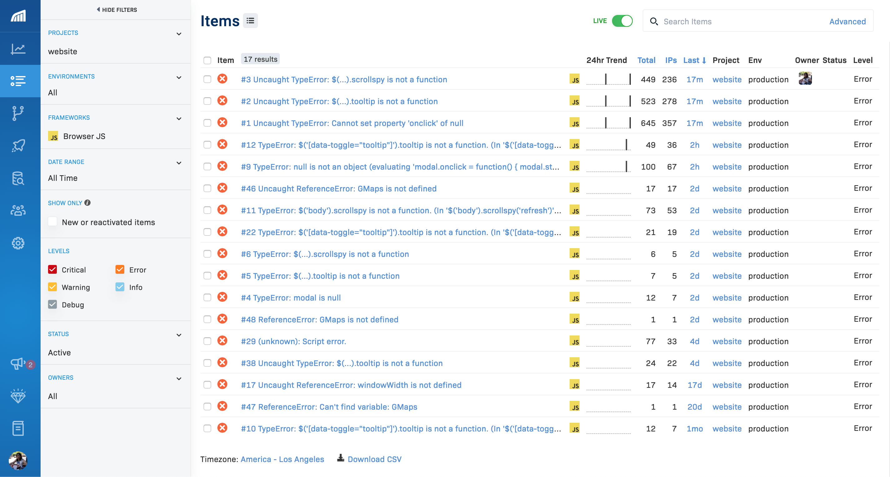

Rollbar - Monitor, Triage, and Debug errors
Role
Product Research and Design
Team
Rollbar Core Experience
Client
Rollbar
Timeline
Oct 2018 - present
Problem
Rollbar is a full-stack error monitoring tool built for software teams. As users started to report more and more errors in Rollbar, they faced a lot of noisy data and struggled to filter out irrelevant data. This affected their productivity and caused a lot of frustration during daily use.
Solution
We addressed several functional as well as usability issues with the filters in Rollbar. We introduced global filters, improved discoverability of some filters, improved the date/time interactions and made corresponding performance improvements.
What does Rollbar do?
Rollbar is an error monitoring and debugging tool for software engineering teams. It integrates with user's code and surfaces bugs, exceptions and warnings, in real-time. Once users are alerted, they can quickly diagnose the impact of the error, debug the stacktraces and identify which line of code was responsible. Therefore they can deploy faster and ship to customers more frequently.
This live error feed is one of the most critical features for the users.
Problem
As users start reporting more and more errors to Rollbar, the live error feed get very noisy, especially for consumer products that see a lot of users on their website. This makes it very hard to focus on errors that are new or critical.
"My error feed is so noisy, it’s very hard to discover new and critical errors."
Filters are an essential part of Rollbar’s workflow, but they had problems
For time sensitive tasks like debugging production issues and resolving them ASAP, you want to filter down to relevant data in a matter of seconds. Rollbar’s filters had problems.
Filters were not global and persistent, we made them so.
Imagine a user is looking at the dashboard of their payment project, and notices a spike. Now the user goes to the live feed to investigate the spike, but this view has its own local filters that don't get updated. Imagine having to do that all the time, in every page.
User notices a spike on the dashboard for the project 'Payment' in the environment 'production'.
When users goes to the live feed to investigate, the filter selections are lost.
We made all the filters global, and persistent moving from one page to another.
Now when users selects filters in the dashboard, they persist elsewhere.
Items - the live feed, with all the previous filter selections maintained.
Date/time filter selection was obscure and inefficient, we improved it.
This is the live feed that users would look at daily. Could you tell me how would you set a date/time range?
Date/time selectors weren't very discoverable and used unfamiliar terminology.
Not only are they obscure in nature, but the labels you see here are a result of a very funny thing that sometimes happens when engineers build interface without a designer. The internal lingo makes it way to the UI. But completely bonkers to the user. What is seen? How is seen different from activated? A lot of users we spoke to didn’t fully understand what these terms meant.
We moved them to the rest of the filter section where it's easily discovered and consistent with other filters.
Another area of opportunity we identified was that Rollbar only provided custom date time input field. Meanwhile, a lot of users could be filtering these options faster by presets values such as 'Last hour' or 'Last 24hrs'.
Now the default selection equals to the 'seen' filter, and to view the 'activated' errors, users can click on the 'Show only' checkbox. Also, the new presets can be used for quick selections.
Breakdown of the usage of the date/time filter - Custom date vs the Preset values.
Initial statistics show that over 75% of the total usage of new date/time filter is presets.
Level filter selection was not responsive in real-time, we improved it.
Level filters reflect the severity of the error. Rollbar provides 5 levels for errors. Often users only cared about the ‘critical’ and ‘error’ levels. The default behavior was that all levels would be selected in the UI. So users would often gets frustrated when they had to wait for entire page loads before making the next selection, as seen below.
Each level filter selection requires users to wait for the entire query to finish before making the next selection.
We changed the execution of the queries to be asyn on the backend. We also changed the UI treatment to a standard checkbox multi-select color-coded with the color of the icons of each level.
Now users can make multiple level selections without waiting for previous query to execute.
These were some highlights of the several updates made to the filters and navigation. Overall, we also looked at the layout and the design of the individual components. We wanted the new UI components to be modular and reusable. I sketched out a few different design ideas, converted some promising ones to clickable prototypes and tested them internally and external users for efficiency and accuracy.
We split the main filters to be at the top, such as project, environments etc. And the secondary filters such as level and owner closer to the table.
Here we moved all the filters to the top, leaving the date/time and search closer to the table.
Here we completely let go of the top filters and created an side filter section with all the unified filters. We also explored some unconventional UI patterns to see the effect on users comfort level and efficiency.
Based on the feedback, there was no conclusive preference of the users for the top vs side layout. Users were better and faster with the interactions for familiar patterns like dropdowns and checkboxes. We also asked the users to rank the filters in the order of importance and usage. We ended up designing a side filter section, ordered according to the importance of the filters and using more familiar UI patterns.
Old Rollbar experience - inconsistent filters, old bootstrap style and some confusing interactions.
New Rollbar experience - consistent filters, updated look and feel and some simple, familiar interactions.
Launch and Impact
The new UX was launched in phases with the help of feature flags. We started with our customer advisory panel users who were the biggest source of feedback and helped us identify some major bugs and performance issues. This is currently under beta launch open to all users who want to opt-in. We've had a 37% adoption rate for beta.
We've received tons of feedback and have made some more changes in the product since then. I'd be happy to talk in more detail about the project and other improvements made that aren't covered here, one on one.